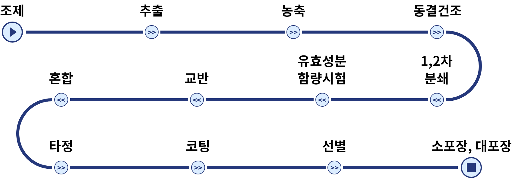

안심하고 복용하세요
누베베 원외 탕전실
철저한 품질 관리(Quality Control)
최적의 효과
- 누베베 감비정D 감량 핵심 성분 기술 특허 7건 보유 (조제 · 제제 부문)
- 약효 보증을 위한 조제과정별 감량 핵심 성분 HPLC 검사 실시
- 누베베 비만연구소와 공동 연구 (연 평균 9억원 투자)

안전성 확보
- 식약처 hGMP 인증 한약재만 사용
- 무균시설을 갖춘 KGMP 수준의 조제 시설
- 14단계 표준화된 조제과정 및 정기적인 중금속·미생물 독성 실험
14단계 표준화된 조제 과정

정기적인 중금속, 미생물 검사
내가 복용하는 한약